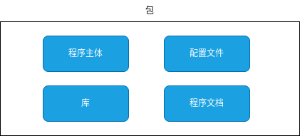

第六章 包管理系统和应用程序¶
6.1 CentOS 包管理¶
什么是包管理¶
许多软件都可以在不同的Linux发行版本中使用。 一言以蔽之，软件除了提供软件程序本身的功能以外，还需要程序所依赖使用的库文件、软件文档等。 因此，Linux各种发行版本将这些集合视作一个称为包的单元。
安装（installing）和删除（uninstalling）uninstalling软件称为包的管理。 通过使用包管理，您可以轻松地查看当前安装的软件的详细信息，检查软件之间的依赖关系，并避免软件之间的冲突。
包依赖是一种关系，其意为必须先安装包B才能安装包A，才能使包A工作。 如果您在尚未安装包B时尝试安装包A，您的包管理系统将因为依赖问题而报告错误。
如第一章所述，Redhat（CentOS）和Ubuntu/Debian系有不同的包管理器。
RadHat系 |
Ubuntu/Debian系 |
|
|---|---|---|
包形式 |
rpm |
deb |
包管理形式 |
rpm 命令 |
dpkg 命令 |
使用存储库的包管理命令 |
yum(dnf)命令 |
apt 命令 |
首先对RedHat(CentOS)系进行说明。rpm和yum都是包管理的命令，它们的区别如下。
rpm 命令
单独管理每个软件包。依赖关系不会自动解析匹配，但会显示起所依赖包的信息。
yum 命令
浏览存储库，管理当前安装包的依赖包。其依赖关系会自动解决。
如果您需要明确指定要使用并安装的包的版本，使用 rpm 命令更加合适。 但是，您必须单独指定所需的包并注意它们的安装顺序。 另一方面，yum命令会根据当前使用的操作系统版本安装相应的版本和依赖包。
使用rpm命令¶
rpm命令用于管理rpm包。
rpm [选项] 包名称
查看包信息¶
要查看和打印有关 rpm 包的信息，请使用 rpm 命令的 “-q”(–query)选项。 要显示更加详细的信息，可以使用以下选项组合。
选项 |
说明 |
|---|---|
-q、–query |
如果已经安装了包，则显示软件包的版本 |
-a、–all |
列出已安装的rpm包信息 |
-i、–info |
显示指定包的详细信息 |
-f、–file |
显示包含指定文件的 rpm 包 |
-c、–configfiles |
仅显示指定包中的配置文件 |
-d、–docfiles |
仅显示指定包中的文档 |
-l、–list |
显示指定包中包含的所有文件 |
-K、–checksig |
检查指定包文件中包含的所有摘要值和签名，以验证包的完整性 |
-R、–requires |
显示指定包依赖的rpm包名 |
-p、–packages |
显示指定 rpm 包文件的信息而不是已安装的 rpm 包 |
–changelog |
显示包更新信息 |
下面是使用带有各种选项的 rpm 命令来显示包信息的实例：
指定包名称以显示有关包的详细信息。
[root@allowing-macaw ~]# rpm -q cups
cups-2.2.6-51.el8.x86_64 ⬅️ ①
[root@allowing-macaw ~]# rpm -q vim
package vim is not installed ⬅️ ②
[root@allowing-macaw ~]# rpm -ql cups ⬅️ ③
/etc/cups
/etc/cups/classes.conf
/etc/cups/client.conf
/etc/cups/cups-files.conf
/etc/cups/cups-files.conf.default
/etc/cups/cupsd.conf
/etc/cups/cupsd.conf.default
/etc/cups/lpoptions
/etc/cups/ppd
/etc/cups/printers.conf
...省略...
/var/log/cups
/var/run/cups
/var/run/cups/certs
/var/spool/cups
/var/spool/cups/tmp
[root@allowing-macaw ~]# rpm -qi cups ⬅️ ④
Name : cups
Epoch : 1
Version : 2.2.6
Release : 51.el8
Architecture: x86_64
Install Date: Sun 29 Jan 2023 09:20:31 AM UTC
Group : Unspecified
Size : 7000359
License : GPLv2+ and LGPLv2 with exceptions and AML
Signature : RSA/SHA256, Wed 18 Jan 2023 11:24:30 PM UTC, Key ID 05b555b38483c65d
Source RPM : cups-2.2.6-51.el8.src.rpm
Build Date : Thu 12 Jan 2023 09:06:11 AM UTC
Build Host : x86-01.mbox.centos.org
Relocations : (not relocatable)
Packager : CentOS Buildsys <bugs@centos.org>
Vendor : CentOS
URL : http://www.cups.org/
Summary : CUPS printing system
Description :
CUPS printing system provides a portable printing layer for
UNIX® operating systems. It has been developed by Apple Inc.
to promote a standard printing solution for all UNIX vendors and users.
CUPS provides the System V and Berkeley command-line interfaces.
[root@allowing-macaw ~]# rpm -qc cups ⬅️ ⑤
/etc/cups/classes.conf
/etc/cups/client.conf
/etc/cups/cups-files.conf
/etc/cups/cupsd.conf
/etc/cups/lpoptions
/etc/cups/printers.conf
/etc/cups/snmp.conf
/etc/cups/subscriptions.conf
/etc/dbus-1/system.d/cups.conf
/etc/logrotate.d/cups
/etc/pam.d/cups
[root@allowing-macaw ~]# rpm -q --changelog cups ⬅️ ⑥
* Wed Dec 14 2022 Zdenek Dohnal <zdohnal@redhat.com> - 1:2.2.6-51
- 2130391 - Kerberized IPP Printing Fails
...省略...
* Mon Jun 26 2000 Tim Powers <timp@redhat.com>
- started changelog
- fixed init.d script location
- changed script in init.d quite a bit and made more like the rest of our
startup scripts
[root@allowing-macaw ~]# ll /etc/skel/.bashrc ⬅️ ⑦
-rw-r--r-- 1 root root 376 Apr 7 2022 /etc/skel/.bashrc
[root@allowing-macaw ~]# rpm -qf /etc/skel/.bashrc ⬅️ ⑧
bash-4.4.20-4.el8.x86_64
注解
查看已下载的包的文件信息¶
您可以下载获取rpm软件包，然后通过rpm命令指定rpm软件包文件进行安装。
使用“-p”选项指定您已获取的预安装包文件并查询该包文件。 “-p”选项提供有关未安装的软件包的信息。
在下面的执行示例中，将显示单独下载的zsh rpm 软件包的信息。
[root@allowing-macaw ~]# rpm -qpl zsh-5.5.1-10.el8.x86_64.rpm
/etc/skel/.zshrc
/etc/zlogin
/etc/zlogout
/etc/zprofile
/etc/zshenv
/etc/zshrc
/usr/bin/zsh
/usr/lib/.build-id
/usr/lib/.build-id/0b
/usr/lib/.build-id/0b/7798b9051109287c74d7bc14c18f806636a4d4
...省略...
安装包和卸载包¶
安装 rpm 包或更新 rpm 包的主要选项如下：
选项 |
说明 |
|---|---|
-i、–install |
安装软件包（单个或多个） |
-U、–upgrade |
升级软件包（单个或多个） |
-F、–freshen |
如果软件包已经安装则升级 |
-v、–verbose |
提供更详细的输出 |
-h、–hash |
在软件包安装时打印hash值（与 -v 配合使用） |
–nodeps |
不验证包依赖 |
–force |
–replacepkgs –replacefiles 的缩写 |
–oldpackage |
升级到旧版本的软件包（–force on upgrades 会自动执行此操作） |
–test |
不要安装，但要告诉它是否有效 |
–replacefiles |
忽略包之间的文件冲突 |
–replacepkgs |
如果软件包已经存在则重新安装 |
下面以rpm命令的各种选项的使用举例，介绍安装软件包如何使用。
[root@allowing-macaw ~]# rpm -q zsh ⬅️ ①
package zsh is not installed
[root@allowing-macaw ~]# rpm -ivh zsh-5.5.1-10.el8.x86_64.rpm ⬅️ ②
Verifying... ################################# [100%]
Preparing... ################################# [100%]
Updating / installing...
1:zsh-5.5.1-10.el8 ################################# [100%]
[root@allowing-macaw ~]# rpm -q zsh ⬅️ ③
zsh-5.5.1-10.el8.x86_64
注解
安装包依赖其他软件包时，必须安装（或同时安装）所依赖的软件包。 否则安装将会中止。 但是，您可以使用“–nodeps”选项忽略依赖关系。 然而这样做在程序执行可能会产生某些意想不到的错误。
[root@allowing-macaw ~]# rpm -ivh mod_ssl-2.4.37-47.module_el8.6.0+1111+ce6f4ceb.1.x86_64.rpm ⬅️ ①
error: Failed dependencies:
httpd = 0:2.4.37-47.module_el8.6.0+1111+ce6f4ceb.1 is needed by mod_ssl-1:2.4.37-47.module_el8.6.0+1111+ce6f4ceb.1.x86_64
httpd-filesystem is needed by mod_ssl-1:2.4.37-47.module_el8.6.0+1111+ce6f4ceb.1.x86_64
httpd-mmn = 20120211x8664 is needed by mod_ssl-1:2.4.37-47.module_el8.6.0+1111+ce6f4ceb.1.x86_64
sscg >= 2.2.0 is needed by mod_ssl-1:2.4.37-47.module_el8.6.0+1111+ce6f4ceb.1.x86_64
[root@allowing-macaw ~]# rpm -ivh --nodeps mod_ssl-2.4.37-47.module_el8.6.0+1111+ce6f4ceb.1.x86_64.rpm ⬅️ ②
Verifying... ################################# [100%]
Preparing... ################################# [100%]
Updating / installing...
1:mod_ssl-1:2.4.37-47.module_el8.6.################################# [100%]
warning: user apache does not exist - using root
注解
此外，要卸载已安装的rpm包，请使用“-e”选项并将软件包名称指定为参数。
选项 |
说明 |
|---|---|
-e、–erase |
删除软件包 |
–nodeps |
忽略依赖关系直接删除软件包 |
–allmatches |
删除所有与包名匹配的包版本 |
卸载时也会验证 rpm 包之间的依赖关系。 如果您要卸载的软件包依赖其他软件包，则卸载过程将中止。 通过使用“–nodeps”选项，可以忽略依赖关系并卸载，但可能会有其他影响。
[root@allowing-macaw ~]# rpm -q zsh ⬅️ ①
zsh-5.5.1-10.el8.x86_64
[root@allowing-macaw ~]# rpm -e zsh ⬅️ ②
[root@allowing-macaw ~]# rpm -q zsh ⬅️ ③
package zsh is not installed
注解
使用 yum 命令¶
yum 命令是用于管理 rpm 软件包的程序。 自动解析通软件包依赖关系以便对软件进行安装、卸载和更新。 yum 命令与 Internet 上的存储库（存储和管理软件包的仓库）进行查询，使您可以轻松安装 rpm 软件包并获取最新的软件包。 yum 命令必须结合子命令使用。
yum [选项] {子命令} [软件包名称]
查看软件包的信息¶
yum命令中搜索和打印软件包的主要子命令如下所示：
选项 |
说明 |
|---|---|
list |
列出软件包或软件包组 |
list installed |
列出已经安装的软件包或软件包组 |
info |
显示有关软件包或软件包组的详细信息 |
search |
搜索给定字符串的软件包详细信息 |
repoquery –deplist |
列出软件包的依赖项以及提供它们的软件包 |
list –updates |
列出可以升级的软件包 |
check-update |
检查可用的升级软件包 |
下面是使用 yum 命令的各个子命令显示软件包的信息的示例：
[root@allowing-macaw ~]# yum list --installed ⬅️ ①
Installed Packages
NetworkManager.x86_64 1:1.40.10-1.el8 @baseos
NetworkManager-libnm.x86_64 1:1.40.10-1.el8 @baseos
acl.x86_64 2.2.53-1.el8 @BaseOS
adobe-mappings-cmap.noarch 20171205-3.el8 @appstream
adobe-mappings-cmap-deprecated.noarch 20171205-3.el8 @appstream
adobe-mappings-pdf.noarch 20180407-1.el8 @appstream
audit-libs.x86_64 3.0.7-4.el8 @BaseOS
avahi.x86_64 0.7-20.el8 @baseos
avahi-glib.x86_64 0.7-20.el8 @baseos
... 省略 ...
[root@allowing-macaw ~]# yum list --updates ⬅️ ②
Last metadata expiration check: 2:49:54 ago on Tue 31 Jan 2023 03:50:03 AM UTC.
[root@allowing-macaw ~]# yum info bash ⬅️ ③
Last metadata expiration check: 2:50:08 ago on Tue 31 Jan 2023 03:50:03 AM UTC.
Installed Packages
Name : bash
Version : 4.4.20
Release : 4.el8
Architecture : x86_64
Size : 6.5 M
Source : bash-4.4.20-4.el8.src.rpm
Repository : @System
From repo : BaseOS
Summary : The GNU Bourne Again shell
URL : https://www.gnu.org/software/bash
License : GPLv3+
Description : The GNU Bourne Again shell (Bash) is a shell or command language
: interpreter that is compatible with the Bourne shell (sh). Bash
: incorporates useful features from the Korn shell (ksh) and the C shell
: (csh). Most sh scripts can be run by bash without modification.
注解
安装和卸载包¶
以下yum 命令的子命令主要用于进行安装、更新和卸载。
选项 |
说明 |
|---|---|
install |
指定安装的rpm软件包，并自动解决依赖关系。 |
update |
更新所有已安装的可以更新的rpm软件包，也可以指定和更新单个rpm软件包。 |
upgrade |
对整个系统进行发布版本升级 |
remove |
卸载指定rpm包 |
yum 命令使用各种子命令来提供软件包安装等示例：
[root@allowing-macaw ~]# yum install zsh ⬅️ ①
Last metadata expiration check: 3:12:29 ago on Tue 31 Jan 2023 03:50:03 AM UTC.
Dependencies resolved.
========================================================================================================================
Package Architecture Version Repository Size
========================================================================================================================
Installing:
zsh x86_64 5.5.1-10.el8 baseos 2.9 M
Transaction Summary
========================================================================================================================
Install 1 Package
Total download size: 2.9 M
Installed size: 6.9 M
Is this ok [y/N]: y ⬅️ ②
Downloading Packages:
zsh-5.5.1-10.el8.x86_64.rpm 257 kB/s | 2.9 MB 00:11
------------------------------------------------------------------------------------------------------------------------
Total 230 kB/s | 2.9 MB 00:12
Running transaction check
Transaction check succeeded.
Running transaction test
Transaction test succeeded.
Running transaction
Preparing : 1/1
Installing : zsh-5.5.1-10.el8.x86_64 1/1
Running scriptlet: zsh-5.5.1-10.el8.x86_64 1/1
Verifying : zsh-5.5.1-10.el8.x86_64 1/1
Installed:
zsh-5.5.1-10.el8.x86_64
Complete! ⬅️ ③
[root@allowing-macaw ~]# yum list zsh ⬅️ ④
Last metadata expiration check: 3:13:29 ago on Tue 31 Jan 2023 03:50:03 AM UTC.
Installed Packages
zsh.x86_64 5.5.1-10.el8 @baseos
[root@allowing-macaw ~]# yum remove zsh ⬅️ ⑤
Dependencies resolved.
========================================================================================================================
Package Architecture Version Repository Size
========================================================================================================================
Removing:
zsh x86_64 5.5.1-10.el8 @baseos 6.9 M
Transaction Summary
========================================================================================================================
Remove 1 Package
Freed space: 6.9 M
Is this ok [y/N]: y ⬅️ ⑥
Running transaction check
Transaction check succeeded.
Running transaction test
Transaction test succeeded.
Running transaction
Preparing : 1/1
Running scriptlet: zsh-5.5.1-10.el8.x86_64 1/1
Erasing : zsh-5.5.1-10.el8.x86_64 1/1
Running scriptlet: zsh-5.5.1-10.el8.x86_64 1/1
Verifying : zsh-5.5.1-10.el8.x86_64 1/1
Removed:
zsh-5.5.1-10.el8.x86_64
Complete! ⬅️ ⑦
注解
yum 的配置文件¶
/etc/yum.conf 文件中是 yum 命令的配置信息。 /etc/yum.conf 包含了基本配置信息，例如指定yum执行的日志文件。 可以在 repodir 字段中指定存储库配置文件（xx.repo）的目录位置。 如果未指定，“/etc/yum.repos.d”目录将是默认目录。 稍后会详细介绍存储库。
文件 |
说明 |
|---|---|
/etc/yum.conf |
基础配置文件 |
/etc/yum.repos.d/目录下保存的文件 |
存储库配置文件 |
[root@allowing-macaw ~]# cat /etc/yum.conf
[main]
gpgcheck=1
installonly_limit=3
clean_requirements_on_remove=True
best=True
skip_if_unavailable=False
/etc/yum.conf 配置文件的 [main] 部分设置全局 yum 选项。 您还可以添加一个 [repository] 部分来设置特定于存储库的选项。 但是，建议将“.repo”文件放在 /etc/yum.repos.d 目录中以定义各个存储库服务器的配置。 以下示例显示了 /etc/yum.repos.d 目录下各个存储库服务器的配置文件。
[root@allowing-macaw yum.repos.d]# pwd
/etc/yum.repos.d
[root@allowing-macaw yum.repos.d]# ls
CentOS-Stream-AppStream.repo CentOS-Stream-Extras.repo CentOS-Stream-PowerTools.repo
CentOS-Stream-BaseOS.repo CentOS-Stream-HighAvailability.repo CentOS-Stream-RealTime.repo
CentOS-Stream-Debuginfo.repo CentOS-Stream-Media.repo CentOS-Stream-ResilientStorage.repo
CentOS-Stream-Extras-common.repo CentOS-Stream-NFV.repo CentOS-Stream-Sources.repo
CentOS 仓库¶
存储库是您要下载的文件的集合。 如下图所示，除了使用网络上的服务器之外，您还可以指定文件系统中的特定目录作为存储库。